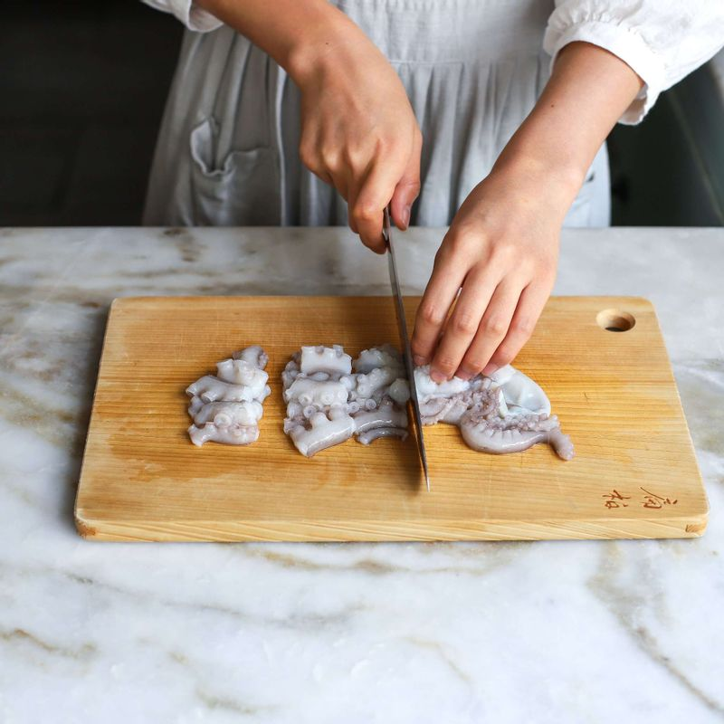
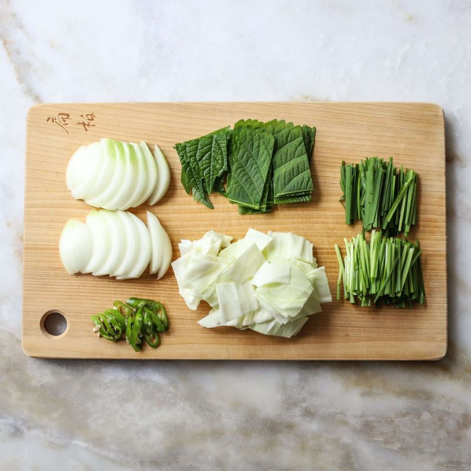
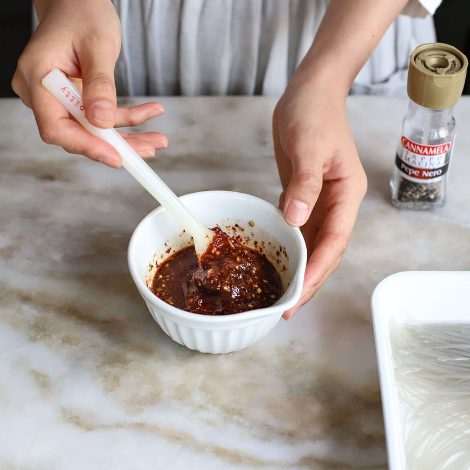
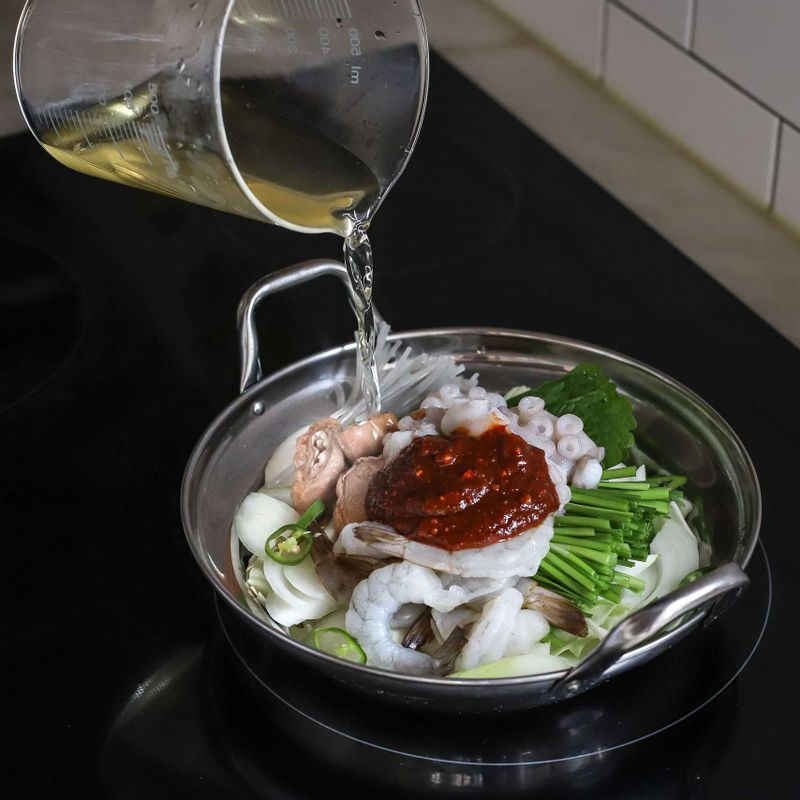
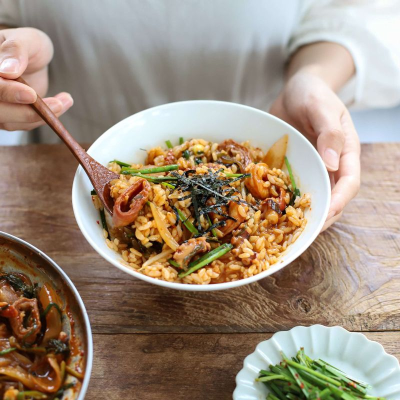

-

낙지는 소금과 밀가루를 묻혀 깨끗하게 닦은 후 먹기 좋은 크기로 잘라주세요.(낙지 빨판의 불순물을 제거하기 위해 밀가루를 사용한답니다) 곱창도 밀가루로 여러 번 씻고, 먹기 좋은 크기로 잘라주세요.(손질 된 소곱창은 그냥 넣어 주시면 돼요)
-

양파는 굵게 채썰고, 양배추와 깻잎은 한 입 크기로 썰어주세요. 부추는 4cm길이로, 청양고추는 송송 썰어주세요.
-

당면은 약 30분간 불려두고, 볼에 낙곱새 양념장 재료를 모두 섞어 양념장을 만들어주세요.
-

전골 냄비에 썰어 둔 양배추를 깔고, 나머지 채소들과 낙지, 소곱창, 양념장 재료를 모두 넣은 후 다시마육수를 부어 중불에서 약 10~15분간 끓여주세요.
-

김가루를 곁들에 밥과 낙곱새를 비벼먹어도 맛있답니다.